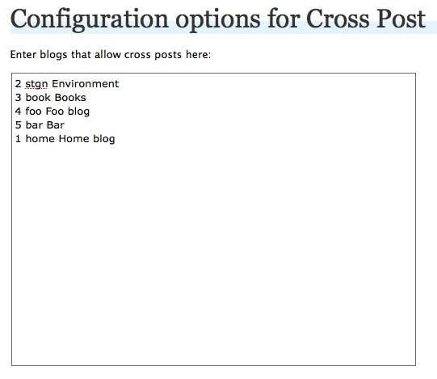
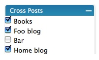
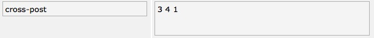

Cross-post is a WordPress MU plugin that allows posts from one blog to be displayed, or cross posted, to other blogs managed within the same instance of MU. The posts are not duplicated to achieve this.
To use cross posts you must designate which blogs a post is to appear in as well as update templates to include a specialized loop that pulls in cross posts from other blogs. There is a side bar portlet to assist in selecting blogs to cross post to. Adding the specialized loop will require some PHP coding. I would have liked to not reuqire any template changes but under the deadline I had I was unable to figure out a way of transparently hooking The Loop. The changes are not dramatic and should work with existing Loop code. The main thing is changing the call to query_posts to query_cross_posts wherever you want to pull in cross posted stories into a template. Anyway, more below...
Install in the normal way. Place it in the standard WordPress plugins directory (not the MU Plugins directory). Go into WordPress and activate it for all blogs that should participate in cross posting.
To run the unit tests that come with the cross post plugin you will need to install SimpleTest.
Once SimpleTest is installed you can execute the tests by going to the URL:
http://<your_site>/wp-content/plugins/cross-post/tests/tests.php
Or whatever your path is to the "tests/tests.php" file in the cross-post plugin directory.
To create a cross post you must first set up which blogs are participating in the cross posting as available targets for a post. You do this in the WordPress "options" tab in the "cross post options" sub menu.
Each participating blog is added to the option box as a single line. The format for the line is:
blog_id section_code Display name
Example:
3 books Book Reviews
Each field is seperated by a space. #blog_id and section_code may not contain spaces. Only the first two spaces matter so go ahead and use spaces in the display name field. The fields are:
All fields are required.
You can find the id of a blog by going to the administrative interface and selecting:
"Site Admin"->"Blogs"
After configuring the blogs that should be made available for cross posts, simply go to the edit screen for a post. You will see a portlet in the right column labeled "Cross Posts". This portlet will display all of the blogs available for corss posting. Simply check the blogs you want this post to be displayed in.
Note that the current blog will not be presented in the list even if it is in the options for cross post. This is obviosly due to the fact that you can't cross post to the "parent" blog.
Once you save the post a meta-key will be created that records the blog ids in which the post will be displayed. The meta key will look something like this:
To remove a post entirely from cross posting behavior simply delete this key.
The most basic way to pull cross posts into a blog is to use the new loop methods provided by the cross-post plugin. Simply change the following functions in your template to their cross post equivilants:
query_posts -> query_cross_posts have_posts -> have_cross_posts the_post -> the_cross_post the_permalink -> the_cross_post_permalink get_permalink -> get_cross_post_permalink get_post_meta -> get_cross_post_meta the_sub_header -> the_cross_post_sub_header
The API also includes some specialized functions for working with CSM content:
get_cross_posts_top_story
The get_cross_post_meta funtion takes the entire $post object rather than just the $post->ID. This is so that it can acquire the blog_id from the $post and call get_post_meta for the correct blog.
The Loop method the_cross_post will populate all of the usual Loop methods such as "the_title" with the proper data.
The query_cross_posts method can take several search modifiers:
An example loop utilizing cross posts looks like this:
<?php query_cross_posts('author_name=eocarroll&showposts=5&offset=1'); ?>
<?php while (have_cross_posts()) : the_cross_post(); ?>
<p class="time-date">
<?php the_time('m.d.y'); ?>
</p>
<h4>
<a href="<?php the_cross_post_permalink(); ?>">
<?php the_title(); ?>
</a>
</h4>
<?php endwhile; ?>